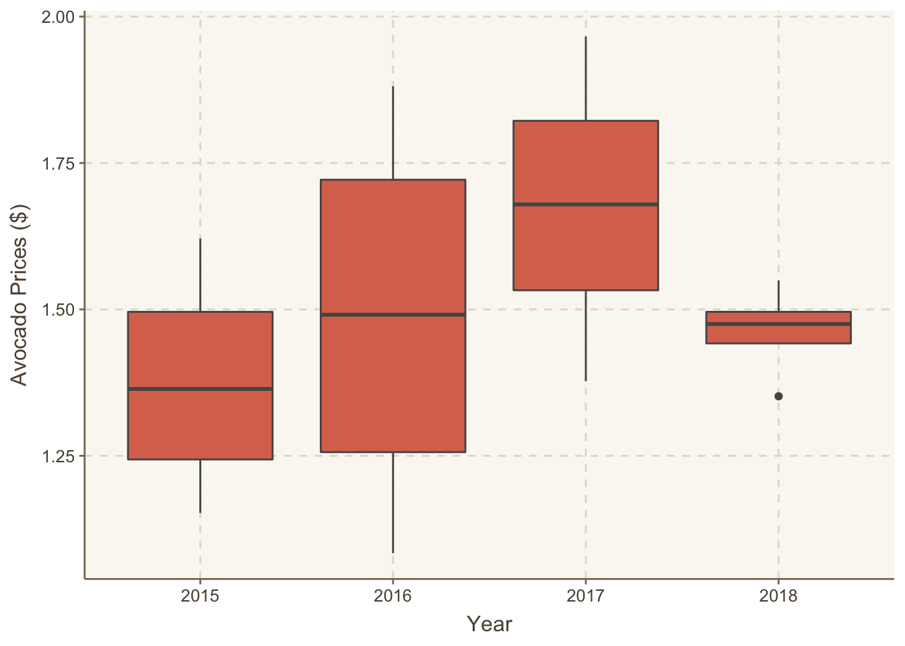
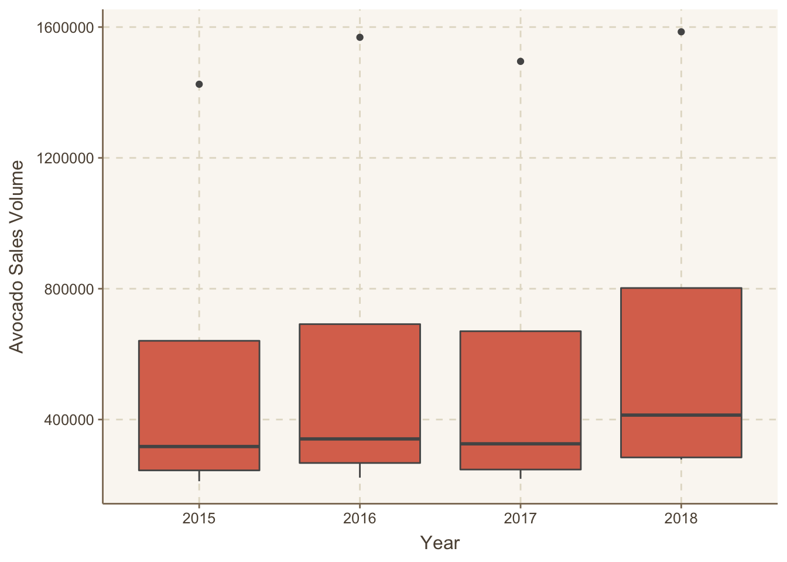

library(tidyverse)
library(here)
library(ggthemr)Challenge 4
Set-Up
Data
avocado <- read_csv(here::here("supporting_artifacts", "supporting_data", "avocado.csv"))Data Cleaning
ca_city = data.frame(city = c("LosAngeles", "SanDiego", "Sacramento", "SanFrancisco"))
avocado <- avocado |>
filter(region != "TotalUS") |>
rename(small = `4046`, large = `4225`, xlarge = `4770`)Challenge Problem
Set-Up
Data for this challenge comes from FRED’s All Transcations House Price Index series for San Diego, LA, San Francsico, and Sacramento.
sandiego <- read_csv(here::here("supporting_artifacts", "supporting_data", "sandiego.csv"))
sac <- read_csv(here::here("supporting_artifacts", "supporting_data", "sac.csv"))
sanfran <- read_csv(here::here("supporting_artifacts", "supporting_data", "sanfran.csv"))
la <- read_csv(here::here("supporting_artifacts", "supporting_data", "la.csv"))Data Cleaning
avocado_cal <- avocado |>
semi_join(ca_city, by = c("region" = "city")) |>
group_by(region, year) |>
summarise(avocado_price = mean(AveragePrice),
avocado_volume = mean(`Total Volume`)) |>
mutate(year = as.factor(year))
house_prices <- sandiego |>
full_join(sac, by = c("DATE" = "DATE")) |>
full_join(la, by = c("DATE" = "DATE")) |>
full_join(sanfran, by = c("DATE" = "DATE")) |>
separate(DATE, c("year", "month", "day"), "-") |>
rename(LosAngeles = ATNHPIUS06037A,
SanDiego = ATNHPIUS06073A,
SanFrancisco = ATNHPIUS41884Q,
Sacramento = ATNHPIUS06067A) |>
mutate(across(where(is.numeric), ~.*2000),
year = as.factor(year)) |>
pivot_longer(cols = SanDiego:SanFrancisco,
names_to = "city",
values_to = "price") |>
group_by(city, year) |>
summarise(house_price = mean(price, na.rm = TRUE))Merge Data
avocado_houses <- house_prices |>
inner_join(avocado_cal, by = c("city" = "region", "year" = "year"))Plot Data
ggthemr("dust")
ggplot(data = avocado_houses) +
geom_boxplot(mapping = aes(x = year, y = house_price)) +
labs(x = "Year", y = "House Prices ($)")
ggplot(data = avocado_houses) +
geom_boxplot(mapping = aes(x = year, y = avocado_price)) +
labs(x = "Year", y = "Avocado Prices ($)")
ggplot(data = avocado_houses) +
geom_boxplot(mapping = aes(x = year, y = avocado_volume)) +
labs(x = "Year", y = "Avocado Sales Volume")
From 2015 to 2018, house prices steadily rose from a mean price across the 4 California regions of $ 460441 to a mean of $ 571431.2. Meanwhile, avocado prices rose at a slower rate, from a mean of $ 1.375457 to a mean of $ 1.462813. Meanwhile, avocado sales volume stayed about the same in that time period . Therefore, house prices have risen at a much higher rate than the price and sales of avocados have, meaning the likely explanation for why millennials can’t afford a home is because of the disproportionate home price increase.